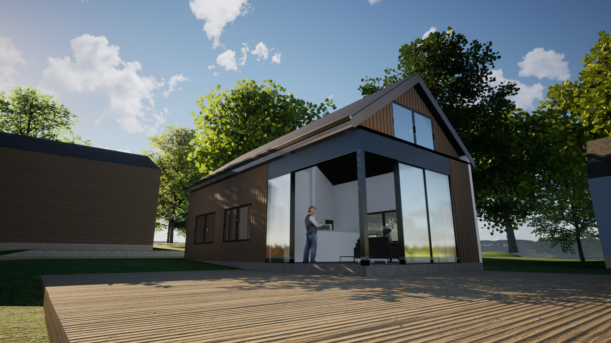
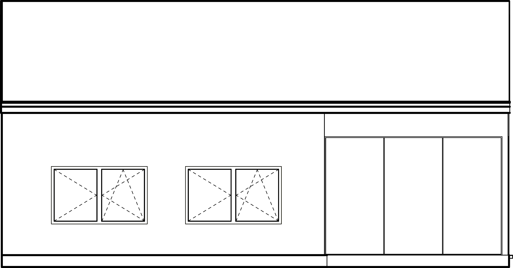
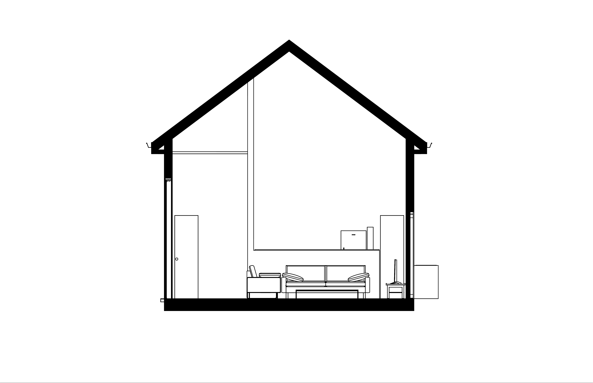
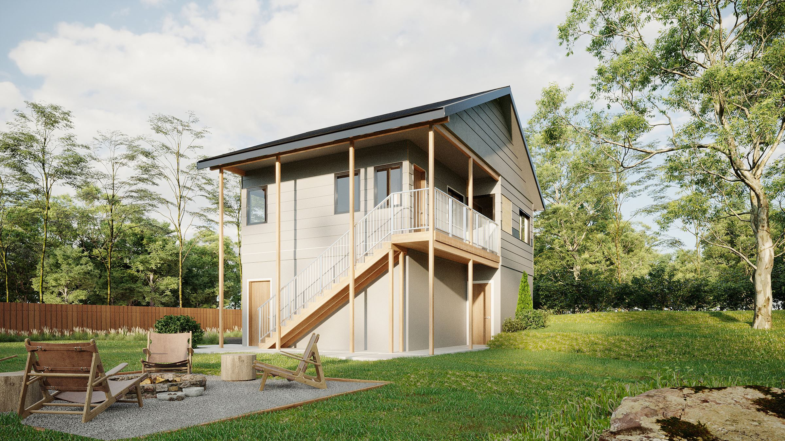
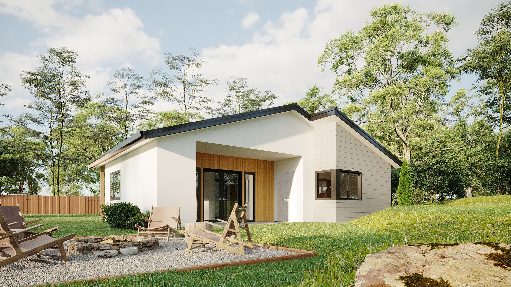
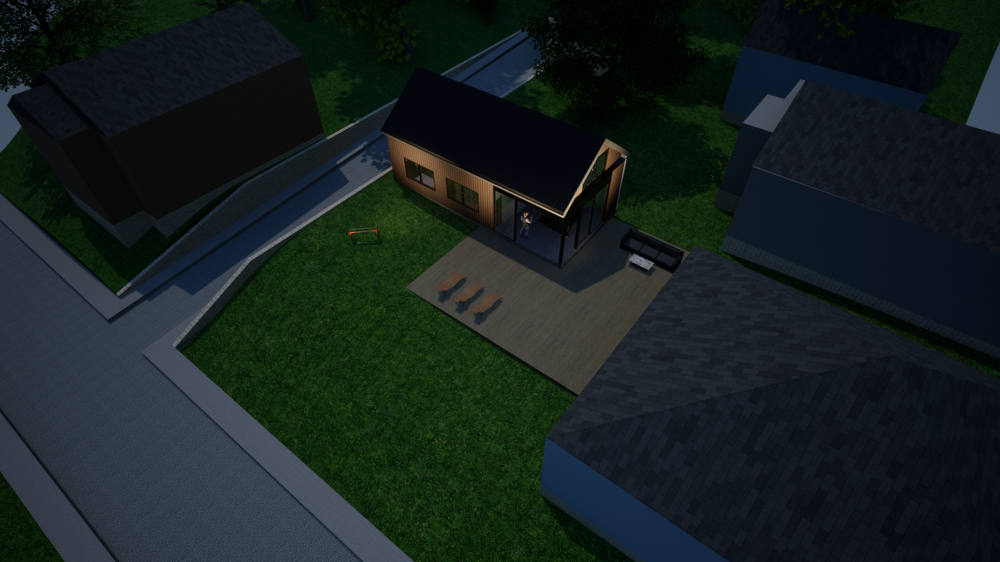
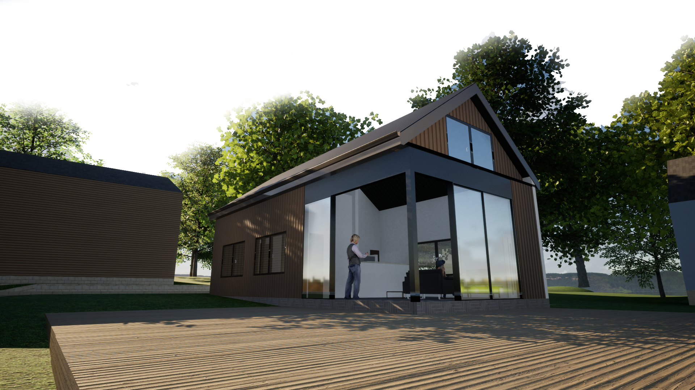
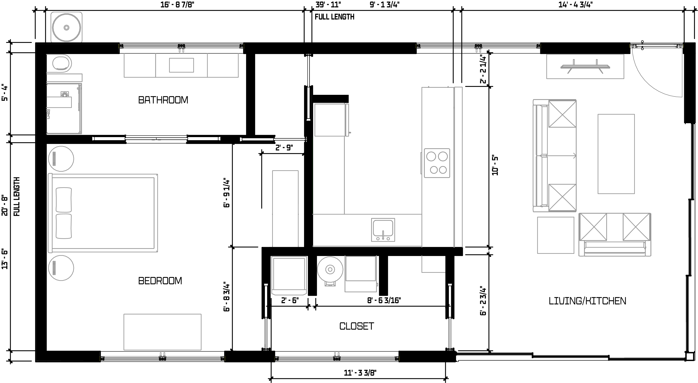

Architecture
Neo-Nordic ADU · Bloomington, IN
Accessory Dwelling Unit

Role
Design · ModelingScope
Residential ADU · ~600 sfTools
Rhino 8 · TwinmotionTucked behind a home in Bloomington, this ADU was designed for a graduate student looking for a simple, comfortable place to live.
Inspired by modern Nordic architecture, the design uses a clean and efficient form that keeps the space affordable while still feeling warm and connected to the outdoors.
01Problem
A graduate student needed more than just extra housing behind a Bloomington home. The goal was to create a compact and affordable space that felt private and comfortable without taking over the yard or competing with the main house.
02Solution
The design uses a simple gabled form with warm wood siding and a shared deck. A large glass gable wall opens the kitchen and living space to the outdoors, while exposed rafters bring the Nordic influence inside. Deep overhangs help keep the design simple, practical, and cost effective.
03Research




Process
The key for this project was to build a building that takes in site context in regards to scale and form, while separating the building with the facade.
04Product


